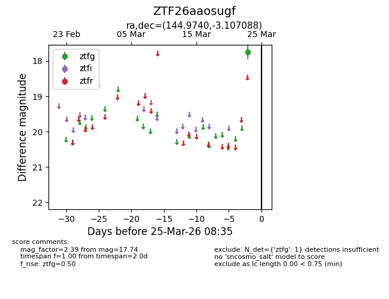
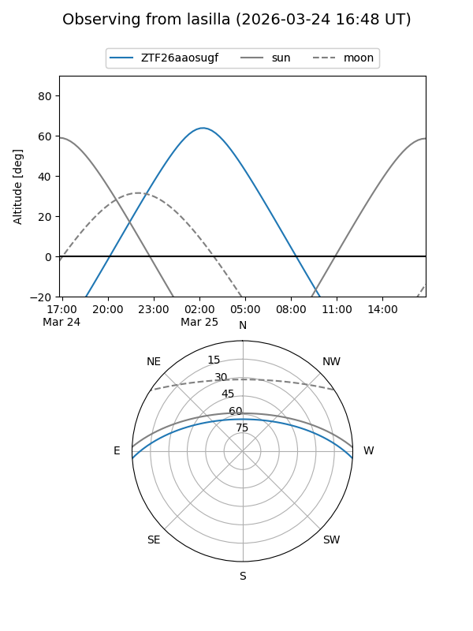
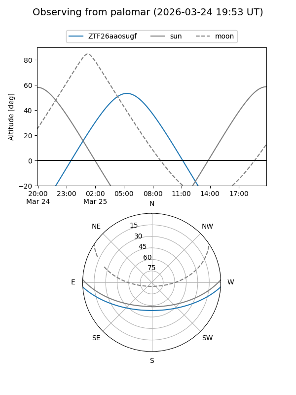

ZTF26aaosugf
Target ZTF26aaosugf at 2026-03-25 08:38
Aliases and brokers:
FINK: link
Lasair: link
ALeRCE: link
alt names
ZTF26aaosugf (ztf,fink_ztf)
Coordinates:
equatorial (ra, dec) = 144.9740,-3.10709
equatorial (HMS+DMS) = 09:39:53.76,-03:06:25.52
galactic (l, b) = (238.4493,+34.83716)
Flags:
Photometry:
last ztfg=17.74
1 ztfg detections
Lightcurve

Visibility


Additional plots